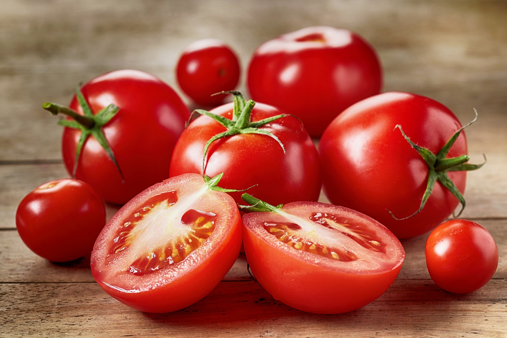
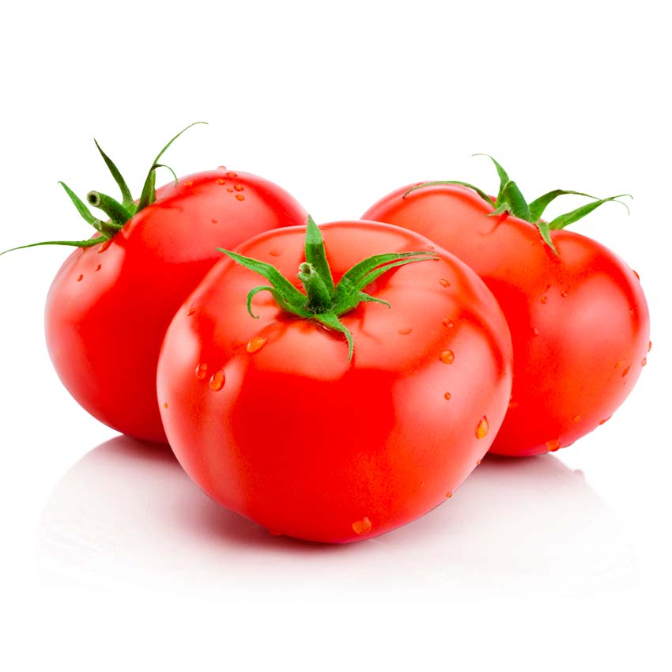

Les tomates sont des fruits-légumes appréciés pour leur saveur juteuse et leur polyvalence culinaire. Originaires d'Amérique du Sud, elles sont cultivées dans de nombreuses régions du monde et existent dans une variété de formes, de tailles et de couleurs, allant du rouge vif au jaune, en passant par le vert et le violet. Les tomates sont une excellente source de vitamines C et K, ainsi que de minéraux essentiels tels que le potassium et le folate. Elles peuvent être consommées crues dans des salades, des sandwiches ou des sauces, ou cuites dans des plats tels que les soupes, les ragoûts et les plats de pâtes. Quelle que soit la manière dont elles sont préparées, les tomates ajoutent une touche de fraîcheur et de couleur à de nombreux plats.
 